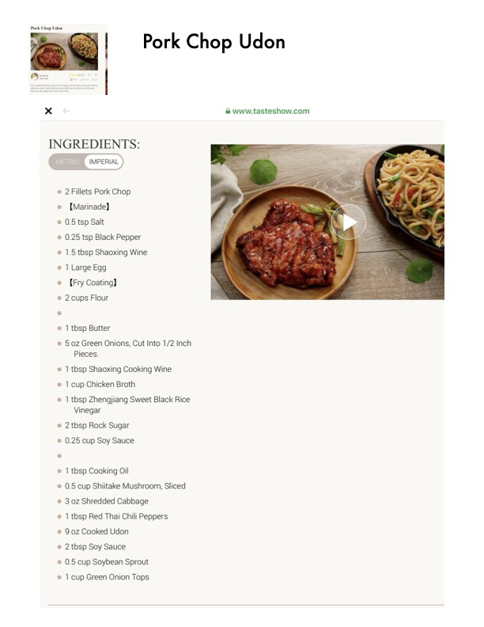

Pork Chop Udon

Original cookbook page 125
Ingredients
- IMPERIAL
- 2Fillets Pork Chop
- e [Marinade]
- 0.5 tsp Salt
- 0.25 tsp Black Pepper
- 1.65 tbsp Shaoxing Wine
- 1 Large Egg
- [Fry Coating]
- 2cups Flour
- 1 tbsp Butter
- 50z Green Onions, Cut Into 1/2 Inch
- Pieces.
- 1 tbsp Shaoxing Cooking Wine
- 1 cup Chicken Broth
- 1 tbsp Zhengjiang Sweet Black Rice
- Vinegar
- 2tbsp Rock Sugar
- 0.25 cup Soy Sauce
- 1 tbsp Cooking Oil
- 0.5 cup Shiitake Mushroom, Sliced
- 30z Shredded Cabbage
- 1 tbsp Red Thai Chili Peppers
- 90z Cooked Udon
- 2tbsp Soy Sauce
- 0.5 cup Soybean Sprout
- 1 cup Green Onion Tops
- I Pork Chop Udon
Instructions
- 2Fillets Pork Chop e [Marinade] 0.5 tsp Salt e 0.25 tsp Black Pepper e 1.65 tbsp Shaoxing Wine 1 Large Egg
- 50z Green Onions, Cut Into 1/2 Inch Pieces.
- 1 tbsp Shaoxing Cooking Wine 1 cup Chicken Broth
- 0.5 cup Shiitake Mushroom, Sliced 30z Shredded Cabbage
Recipe #125 from collection